graph TD
shadow_tower_part1a[Shadow Tower Part1 A] -- Tower Top 3 -8 --> shadow_tower_part3a[Shadow Tower Part3 A 3]
shadow_tower_part3a[Shadow Tower Part3 A] -- Top right 0 -8 --> shadow_tower_part1a[Shadow Tower Part1 A]
shadow_tower_part3a[Shadow Tower Part3 A] -- Top left 2 0 --> human_world_solitary_region[Human World
Solitary Region 6]
shadow_tower_part3a[Shadow Tower Part3 A] -- Bottom 1 -8 --> shadow_tower_part1c[Shadow Tower Part1 C]
shadow_tower_part3a[Shadow Tower Part3 A] -- Jump --> shadow_tower_part3b[Shadow Tower Part3 B 3]
shadow_tower_part1c[Shadow Tower Part1 C] -- Top 1 0 --> water_world_watery_labyrinth_area[Water World
Watery Labyrinth Area 3]
shadow_tower_part1c[Shadow Tower Part1 C] -- Middle 2 -8 --> shadow_tower_part3a[Shadow Tower Part3 A 3]
shadow_tower_part1c[Shadow Tower Part1 C] -- Edge 3 0 --> fire_world_phoenix_cave[Fire World
Phoenix Cave 3]
shadow_tower_part3b[Shadow Tower Part3 B] -- Bottom middle 1 0 --> earth_world_stone_cavern[Earth World
Stone Cavern 7]
shadow_tower_part3b[Shadow Tower Part3 B] -- Top edge 1 0 --> illusion_world_worship_domain[Illusion World
Worship Domain 3]
shadow_tower_part3b[Shadow Tower Part3 B] -- Bottom end 1 0 --> monster_world_screeching_area[Monster World
Screeching Area 3]
shadow_tower_part3b[Shadow Tower Part3 B] -- Jump --> shadow_tower_part3c[Shadow Tower Part3 C 3]
shadow_tower_part3c[Shadow Tower Part3 C] -- Fence 0 0 --> death_world_gate_of_the_dead[Death World
Gate Of The Dead 4]
fire_world_phoenix_cave[Fire World
Phoenix Cave] -- Entrance 3 0 --> earth_world_hostile_rock_cavern[Earth World
Hostile Rock Cavern 4]
fire_world_phoenix_cave[Fire World
Phoenix Cave] -- Exit 0 -8 --> shadow_tower_part1c[Shadow Tower Part1 C]
water_world_watery_labyrinth_area[Water World
Watery Labyrinth Area] -- Entrance 0 0 --> water_world_white_rain_area[Water World
White Rain Area 4]
water_world_watery_labyrinth_area[Water World
Watery Labyrinth Area] -- Exit 1 -8 --> shadow_tower_part1c[Shadow Tower Part1 C]
monster_world_screeching_area[Monster World
Screeching Area] -- Entrance 2 -8 --> shadow_tower_part3b[Shadow Tower Part3 B 3]
monster_world_screeching_area[Monster World
Screeching Area] -- Totem 0 1 --> human_world_forgotten_region[Human World
Forgotten Region 4]
monster_world_screeching_area[Monster World
Screeching Area] -- Necron -8 0 --> monster_world_false_eye_area[Monster World
False Eye Area 4]
illusion_world_worship_domain[Illusion World
Worship Domain] -- Entrance 2 -8 --> shadow_tower_part3b[Shadow Tower Part3 B 3]
illusion_world_worship_domain[Illusion World
Worship Domain] -- Connection 0 1 --> fire_world_molten_cavern[Fire World
Molten Cavern 4]
illusion_world_worship_domain[Illusion World
Worship Domain] -- Exit 8 0 --> fire_world_ashen_cavern[Fire World
Ashen Cavern 4]
illusion_world_worship_domain[Illusion World
Worship Domain] -- To Boss 0 0 --> fire_world_burning_cavern[Fire World
Burning Cavern 4]
human_world_forgotten_region[Human World
Forgotten Region] -- Exit 3 8 --> human_world_cursed_region[Human World
Cursed Region 7]
human_world_forgotten_region[Human World
Forgotten Region] -- Jump down 1 -8 --> water_world_sunken_river_area[Water World
Sunken River Area 7]
human_world_forgotten_region[Human World
Forgotten Region] -- Totem 0 3 --> human_world_hidden_region[Human World
Hidden Region 5]
human_world_forgotten_region[Human World
Forgotten Region] -- Drop in 8 3 --> monster_world_screeching_area[Monster World
Screeching Area 3]
earth_world_hostile_rock_cavern[Earth World
Hostile Rock Cavern] -- Entrance 3 0 --> fire_world_phoenix_cave[Fire World
Phoenix Cave 3]
earth_world_hostile_rock_cavern[Earth World
Hostile Rock Cavern] -- Boss room 0 3 --> death_world_lingering_curse_layer[Death World
Lingering Curse Layer 5]
fire_world_burning_cavern[Fire World
Burning Cavern] -- Entrance 2 0 --> earth_world_quaking_cavern[Earth World
Quaking Cavern 10]
fire_world_burning_cavern[Fire World
Burning Cavern] -- Platform 8 0 --> illusion_world_dream_domain[Illusion World
Dream Domain 5]
fire_world_burning_cavern[Fire World
Burning Cavern] -- Room 0 1 --> illusion_world_worship_domain[Illusion World
Worship Domain 3]
fire_world_molten_cavern[Fire World
Molten Cavern] -- Abraxus 0 1 --> fire_world_ashen_cavern[Fire World
Ashen Cavern 4]
fire_world_molten_cavern[Fire World
Molten Cavern] -- Platform 0 0 --> illusion_world_worship_domain[Illusion World
Worship Domain 3]
fire_world_ashen_cavern[Fire World
Ashen Cavern] -- Cerberus 0 2 --> fire_world_molten_cavern[Fire World
Molten Cavern 4]
fire_world_ashen_cavern[Fire World
Ashen Cavern] -- Start 0 0 --> illusion_world_worship_domain[Illusion World
Worship Domain 3]
water_world_white_rain_area[Water World
White Rain Area] -- Entrance 3 0 --> water_world_watery_labyrinth_area[Water World
Watery Labyrinth Area 3]
water_world_white_rain_area[Water World
White Rain Area] -- Totem 0 2 --> death_world_dark_castle_layer[Death World
Dark Castle Layer 5]
monster_world_false_eye_area[Monster World
False Eye Area] -- Entrance 3 -8 --> shadow_tower_part2b[Shadow Tower Part2 B 7]
monster_world_false_eye_area[Monster World
False Eye Area] -- Totem 0 2 --> monster_world_screeching_area[Monster World
Screeching Area 3]
death_world_gate_of_the_dead[Death World
Gate Of The Dead] -- Entrance 3 -8 --> shadow_tower_part3c[Shadow Tower Part3 C 3]
death_world_gate_of_the_dead[Death World
Gate Of The Dead] -- Totem 0 2 --> illusion_world_gloomy_domain[Illusion World
Gloomy Domain 5]
human_world_hidden_region[Human World
Hidden Region] -- Jail 1 0 --> death_world_dark_castle_layer[Death World
Dark Castle Layer 5]
human_world_hidden_region[Human World
Hidden Region] -- Corridor 3 0 --> shadow_tower_part2a[Shadow Tower Part2 A 7]
human_world_hidden_region[Human World
Hidden Region] -- Totem 0 3 --> human_world_forgotten_region[Human World
Forgotten Region 4]
illusion_world_gloomy_domain[Illusion World
Gloomy Domain] -- Ladder down 1 0 --> human_world_solitary_region[Human World
Solitary Region 6]
illusion_world_gloomy_domain[Illusion World
Gloomy Domain] -- Entrance 1 -8 --> shadow_tower_part1b[Shadow Tower Part1 B]
illusion_world_gloomy_domain[Illusion World
Gloomy Domain] -- Totem 0 0 --> death_world_gate_of_the_dead[Death World
Gate Of The Dead 4]
illusion_world_dream_domain[Illusion World
Dream Domain] -- Totem 8 3 --> earth_world_false_pit_cavern[Earth World
False Pit Cavern 6]
illusion_world_dream_domain[Illusion World
Dream Domain] -- Entrance 0 0 --> fire_world_burning_cavern[Fire World
Burning Cavern 4]
death_world_lingering_curse_layer[Death World
Lingering Curse Layer] -- Door 2 0 --> earth_world_poisonous_cavern[Earth World
Poisonous Cavern 6]
death_world_lingering_curse_layer[Death World
Lingering Curse Layer] -- Box room 0 3 --> earth_world_hostile_rock_cavern[Earth World
Hostile Rock Cavern 4]
death_world_dark_castle_layer[Death World
Dark Castle Layer] -- Prison 1 0 --> death_world_undead_layer[Death World
Undead Layer 7]
death_world_dark_castle_layer[Death World
Dark Castle Layer] -- Entrance 0 0 --> human_world_hidden_region[Human World
Hidden Region 5]
death_world_dark_castle_layer[Death World
Dark Castle Layer] -- Lower totem 1 0 3 --> earth_world_false_pit_cavern[Earth World
False Pit Cavern 6]
death_world_dark_castle_layer[Death World
Dark Castle Layer] -- Lower totem 2 0 0 --> water_world_white_rain_area[Water World
White Rain Area 4]
death_world_dark_castle_layer[Death World
Dark Castle Layer] -- Upper totem 0 1 --> water_world_impure_pool_area[Water World
Impure Pool Area 6]
shadow_tower_part1b[Shadow Tower Part1 B] -- Edge 1 -8 --> illusion_world_gloomy_domain[Illusion World
Gloomy Domain 5]
shadow_tower_part1b[Shadow Tower Part1 B] -- Middle 2 -17 --> human_world_cursed_region[Human World
Cursed Region 7]
shadow_tower_part1b[Shadow Tower Part1 B] -- Jump --> shadow_tower_part1c[Shadow Tower Part1 C]
shadow_tower_part2a[Shadow Tower Part2 A] -- Top left 3 0 --> earth_world_false_pit_cavern[Earth World
False Pit Cavern 6]
shadow_tower_part2a[Shadow Tower Part2 A] -- Top right 0 0 --> human_world_hidden_region[Human World
Hidden Region 5]
shadow_tower_part2a[Shadow Tower Part2 A] -- Jump --> shadow_tower_part2b[Shadow Tower Part2 B 7]
human_world_solitary_region[Human World
Solitary Region] -- Skeleton 1 0 --> illusion_world_gloomy_domain[Illusion World
Gloomy Domain 5]
human_world_solitary_region[Human World
Solitary Region] -- Cemetery 0 -8 --> water_world_impure_pool_area[Water World
Impure Pool Area 6]
human_world_solitary_region[Human World
Solitary Region] -- Grave 0 -8 --> shadow_tower_part3a[Shadow Tower Part3 A 3]
human_world_solitary_region[Human World
Solitary Region] -- Church 0 0 --> earth_world_stone_cavern[Earth World
Stone Cavern 7]
earth_world_poisonous_cavern[Earth World
Poisonous Cavern] -- Poison 2 0 --> water_world_sunken_river_area[Water World
Sunken River Area 7]
earth_world_poisonous_cavern[Earth World
Poisonous Cavern] -- Rock guy 0 0 --> death_world_lingering_curse_layer[Death World
Lingering Curse Layer 5]
earth_world_poisonous_cavern[Earth World
Poisonous Cavern] -- Entrance 2 0 --> shadow_tower_part2b[Shadow Tower Part2 B 7]
earth_world_false_pit_cavern[Earth World
False Pit Cavern] -- Entrance 3 -8 --> death_world_undead_layer[Death World
Undead Layer 7]
earth_world_false_pit_cavern[Earth World
False Pit Cavern] -- Bridge 0 -8 --> shadow_tower_part2b[Shadow Tower Part2 B 7]
earth_world_false_pit_cavern[Earth World
False Pit Cavern] -- Exit 1 -8 --> shadow_tower_part2a[Shadow Tower Part2 A 7]
earth_world_false_pit_cavern[Earth World
False Pit Cavern] -- Jump in -8 0 --> death_world_dark_castle_layer[Death World
Dark Castle Layer 5]
earth_world_false_pit_cavern[Earth World
False Pit Cavern] -- Totem 0 2 --> illusion_world_dream_domain[Illusion World
Dream Domain 5]
water_world_impure_pool_area[Water World
Impure Pool Area] -- Entrance 2 -8 --> illusion_world_bewilderment_domain[Illusion World
Bewilderment Domain 7]
water_world_impure_pool_area[Water World
Impure Pool Area] -- Flush down 3 0 --> human_world_solitary_region[Human World
Solitary Region 6]
water_world_impure_pool_area[Water World
Impure Pool Area] -- Totem 0 2 --> death_world_dark_castle_layer[Death World
Dark Castle Layer 5]
shadow_tower_part2b[Shadow Tower Part2 B] -- Upper 1 0 --> monster_world_false_eye_area[Monster World
False Eye Area 4]
shadow_tower_part2b[Shadow Tower Part2 B] -- Middle 3 0 --> earth_world_poisonous_cavern[Earth World
Poisonous Cavern 6]
shadow_tower_part2b[Shadow Tower Part2 B] -- Edge 3 0 --> earth_world_false_pit_cavern[Earth World
False Pit Cavern 6]
human_world_cursed_region[Human World
Cursed Region] -- Entrance 3 8 --> shadow_tower_part1b[Shadow Tower Part1 B]
human_world_cursed_region[Human World
Cursed Region] -- Guardian side 2 -17 --> human_world_forgotten_region[Human World
Forgotten Region 4]
earth_world_stone_cavern[Earth World
Stone Cavern] -- Entrance 3 -8 --> human_world_solitary_region[Human World
Solitary Region 6]
earth_world_stone_cavern[Earth World
Stone Cavern] -- Exit 3 -8 --> shadow_tower_part3b[Shadow Tower Part3 B 3]
water_world_sunken_river_area[Water World
Sunken River Area] -- Pool 1 0 --> human_world_forgotten_region[Human World
Forgotten Region 4]
water_world_sunken_river_area[Water World
Sunken River Area] -- Entrance 3 -8 --> earth_world_poisonous_cavern[Earth World
Poisonous Cavern 6]
illusion_world_bewilderment_domain[Illusion World
Bewilderment Domain] -- Exit 1 0 --> water_world_impure_pool_area[Water World
Impure Pool Area 6]
illusion_world_bewilderment_domain[Illusion World
Bewilderment Domain] -- Entrance 2 -8 --> earth_world_rotting_cavern[Earth World
Rotting Cavern 8]
death_world_undead_layer[Death World
Undead Layer] -- King's room 3 -8 --> earth_world_false_pit_cavern[Earth World
False Pit Cavern 6]
death_world_undead_layer[Death World
Undead Layer] -- Entrance 3 0 --> death_world_dark_castle_layer[Death World
Dark Castle Layer 5]
earth_world_rotting_cavern[Earth World
Rotting Cavern] -- Entrance 1 0 --> illusion_world_bewilderment_domain[Illusion World
Bewilderment Domain 7]
earth_world_quaking_cavern[Earth World
Quaking Cavern] -- Entrance 3 0 --> fire_world_burning_cavern[Fire World
Burning Cavern 4]
Human World
human_world_solitary_region
Item Memory used 7
Creatures score 119
31 exit-door Skeleton -> illusion_world_gloomy_domain pos( -4 ,0 ,-4),unknown( 0 ,8),destMapIndex( 13),rot( 1),fineY( 0)
34 exit-door Cemetery -> water_world_impure_pool_area pos( 5 ,3 ,5),unknown( 0 ,0),destMapIndex( 0),rot( 0),fineY( -8)
35 exit-door Grave -> shadow_tower_part3a pos( 0 ,1 ,0),unknown( 0 ,0),destMapIndex( 41),rot( 0),fineY( -8)
38 exit-door Church -> earth_world_stone_cavern pos( 0 ,0 ,0),unknown( 0 ,7),destMapIndex( 28),rot( 0),fineY( 0)
0 item_11c_healing_potion
1 item_12e_dorados_ashes
2 item_11c_healing_potion
3 item_10a_cune
4 item_ce_soul_ring
5 item_11e_anti_venom
7 item_ff_amulet_of_composure
8 item_11c_healing_potion
9 item_136_soul_pod_5_sp
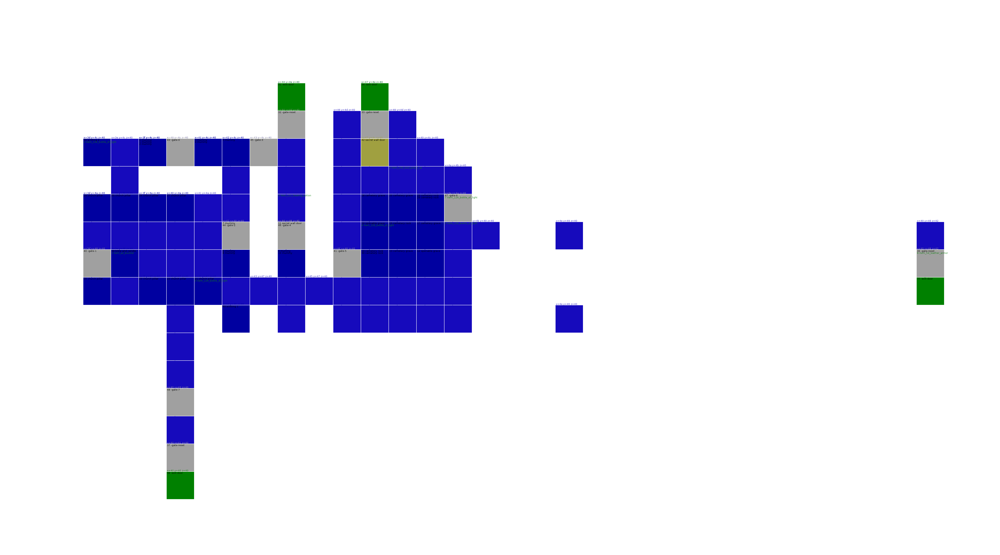
human_world_hidden_region
Item Memory used 13
Creatures score 156
9 exit-door Jail -> death_world_dark_castle_layer pos( -2 ,2 ,-2),unknown( -8 ,0),destMapIndex( 9),rot( 1),fineY( 0)
13 exit-door Corridor -> shadow_tower_part2a pos( -2 ,0 ,-2),unknown( 0 ,0),destMapIndex( 33),rot( 3),fineY( 0)
26 exit-totem Totem -> human_world_forgotten_region pos( 6 ,-6 ,6),unknown( 5 ,0),destMapIndex( 0),rot( 0),fineY( 3)
0 item_127_acid_vaccine
1 item_124_poison_vaccine
2 item_11d_magic_potion
3 item_b_lethal_rapier
4 item_3c_crushing_axe
5 item_120_divine_symbol
6 item_ed_mind_bracelet
7 item_138_soul_pod_29_sp
8 item_11e_anti_venom
9 item_51_full_helm
a item_16_guardian_broad_sword
b item_11c_healing_potion
c item_11e_anti_venom
d item_12e_dorados_ashes
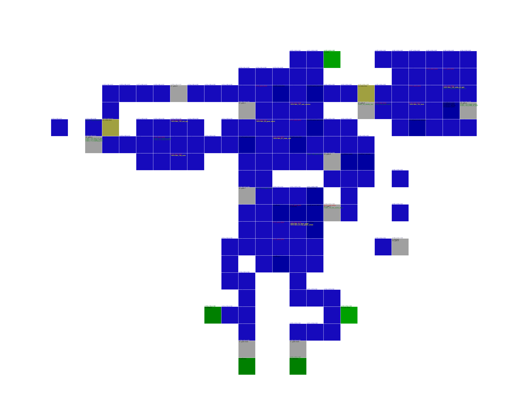
human_world_forgotten_region
Item Memory used 10
Creatures score 210
18 exit-totem Totem -> human_world_hidden_region pos( 5 ,-5 ,5),unknown( -2 ,0),destMapIndex( 0),rot( 0),fineY( 3)
34 exit-door Exit -> human_world_cursed_region pos( 13 ,-1 ,13),unknown( 1 ,1),destMapIndex( 1),rot( 3),fineY( 8)
37 exit-door Jump down -> water_world_sunken_river_area pos( 2 ,7 ,2),unknown( 0 ,0),destMapIndex( 0),rot( 1),fineY( -8)
41 exit-totem Drop in -> monster_world_screeching_area pos( 17 ,8 ,17),unknown( 3 ,0),destMapIndex( 0),rot( 8),fineY( 3)
0 item_11c_healing_potion
1 item_11c_healing_potion
2 item_11f_anti_paralytic
3 item_ac_great_shield
4 item_10c_torch
5 item_62_scale_mail_of_curing
6 item_10a_cune
7 item_5f_magical_leather_armor
8 item_14_crushing_broad_sword
9 item_12e_dorados_ashes
a item_128_spirit_book
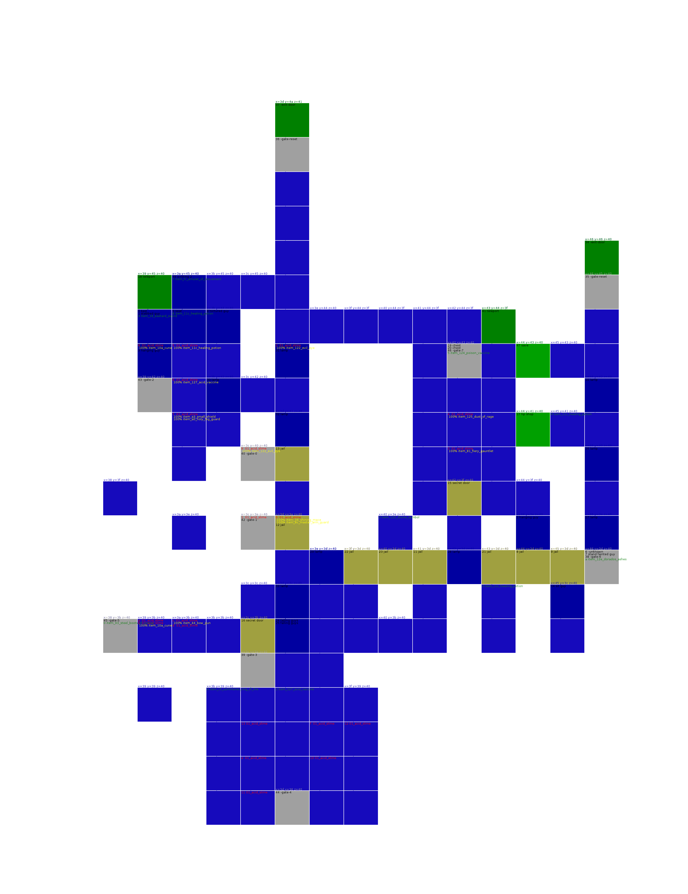
human_world_cursed_region
Item Memory used 7
Creatures score 156
21 0a_guardian_a 100% 0x50 score 251
30 04_fat_mole_a 100% 0x30 score NaN
3 exit-door Entrance -> shadow_tower_part1b pos( 13 ,-1 ,13),unknown( 1 ,1),destMapIndex( 1),rot( 3),fineY( 8)
31 exit-door Guardian side -> human_world_forgotten_region pos( 0 ,0 ,0),unknown( 0 ,0),destMapIndex( 1),rot( 2),fineY(-17)
0 item_10a_cune
1 item_10e_sacred_feather
2 item_138_soul_pod_29_sp
3 item_100_amulet_of_curing
4 item_126_bottle_of_light
5 item_3b_giant_axe
6 item_11f_anti_paralytic
7 item_11f_anti_paralytic
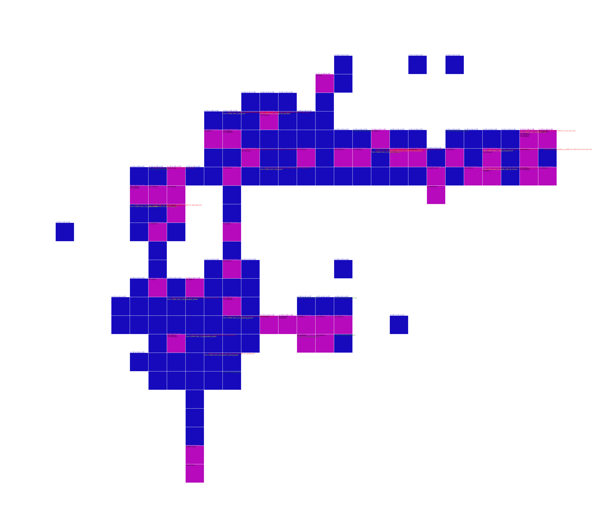
Earth World
earth_world_rotting_cavern
Item Memory used 7
Creatures score 243
30 0a_blank 100% 0x20 score 35
13 exit-door Entrance -> illusion_world_bewilderment_domain pos( -2 ,2 ,-2),unknown( -8 ,0),destMapIndex( 9),rot( 1),fineY( 0)
0 item_10a_cune
1 item_11c_healing_potion
2 item_11e_anti_venom
3 item_127_acid_vaccine
4 item_10e_sacred_feather
5 item_11d_magic_potion
6 item_ab_great_shield
7 item_11c_healing_potion
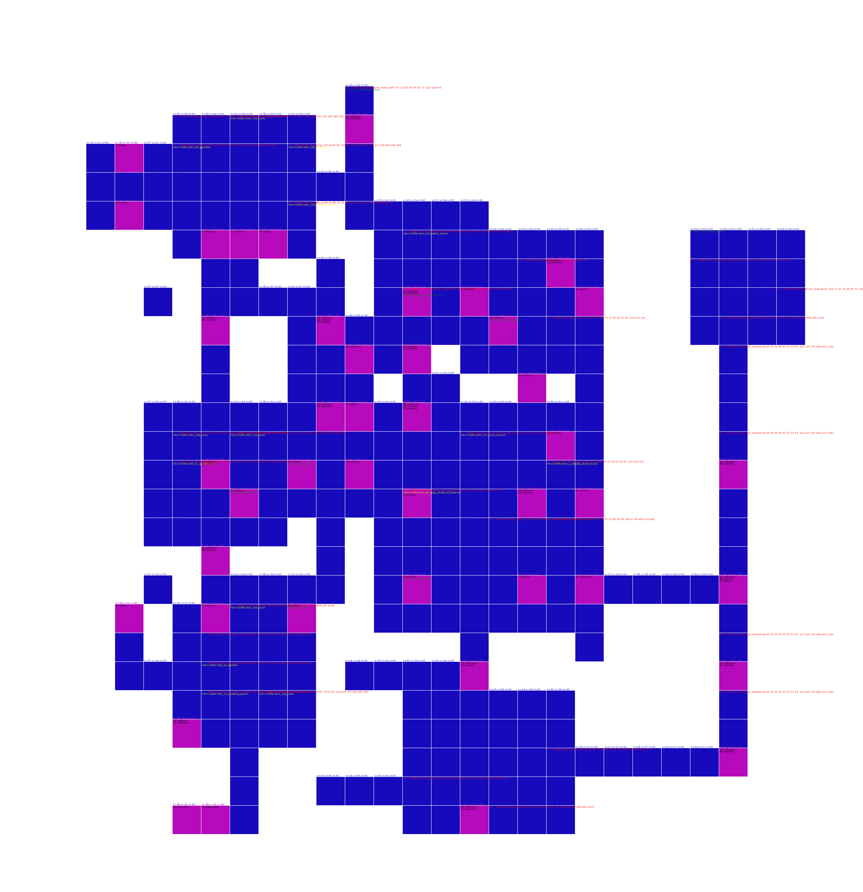
earth_world_poisonous_cavern
Item Memory used 11
Creatures score 285
20 00_duhrin 100% 0x10 score 286
30 05_blank 100% 0x20 score NaN
31 04_auriel_b 100% 0x70 score 421
32 0b_blank 100% 0x50 score NaN
33 0a_blank 100% 0x50 score 39
10 exit-door Rock guy -> death_world_lingering_curse_layer pos( 0 ,0 ,0),unknown( 0 ,0),destMapIndex( 23),rot( 0),fineY( 0)
13 exit-door Poison -> water_world_sunken_river_area pos( 9 ,2 ,9),unknown( 0 ,0),destMapIndex( 4),rot( 2),fineY( 0)
17 exit-door Entrance -> shadow_tower_part2b pos( 0 ,0 ,0),unknown( -7 ,0),destMapIndex( 12),rot( 2),fineY( 0)
0 item_11c_healing_potion
1 item_10e_sacred_feather
2 item_11d_magic_potion
3 item_10a_cune
5 item_123_fire_world_stone
6 item_136_soul_pod_5_sp
7 item_127_acid_vaccine
8 item_10a_cune
a item_7b_leather_glove
b item_12e_dorados_ashes
1c item_125_dust_of_rage
1d item_e9_bracelet_of_movement
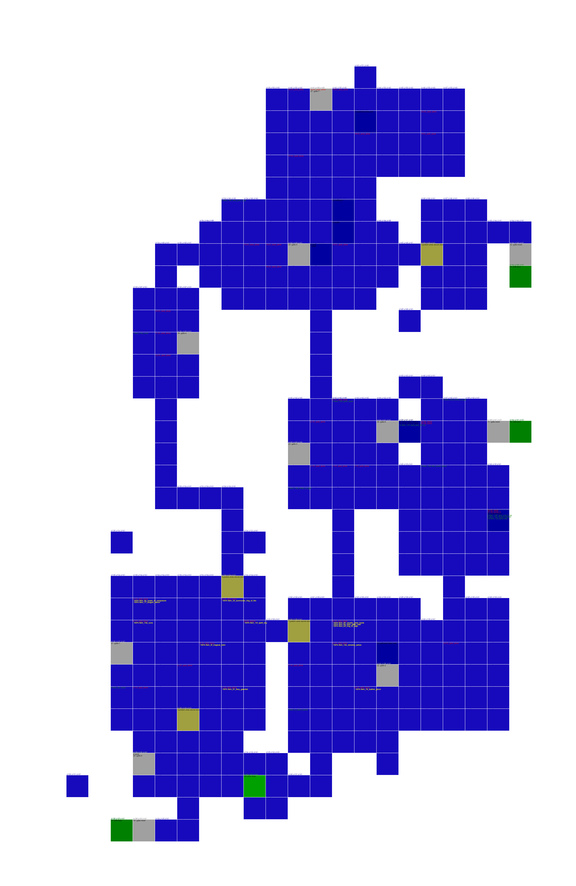
earth_world_stone_cavern
Item Memory used 7
Creatures score 237
13 0c_dybbuk 100% 0x25 score 236
100% item_11e_anti_venom
30 00_dybbuk 100% 0x50 score 237
100% item_10a_cune
31 04_dybbuk 100% 0x0 score 237
100% item_10a_cune
32 04_dybbuk 100% 0x0 score 237
100% item_10a_cune
4 exit-door Entrance -> human_world_solitary_region pos( 4 ,1 ,4),unknown( 0 ,0),destMapIndex( 41),rot( 3),fineY( -8)
7 exit-door Exit -> shadow_tower_part3b pos( 4 ,5 ,4),unknown( 0 ,0),destMapIndex( 40),rot( 3),fineY( -8)
0 item_10a_cune
1 item_12e_dorados_ashes
2 item_11c_healing_potion
3 item_125_dust_of_rage
4 item_120_divine_symbol
5 item_11c_healing_potion
6 item_dc_caustic_ring
7 item_12e_dorados_ashes
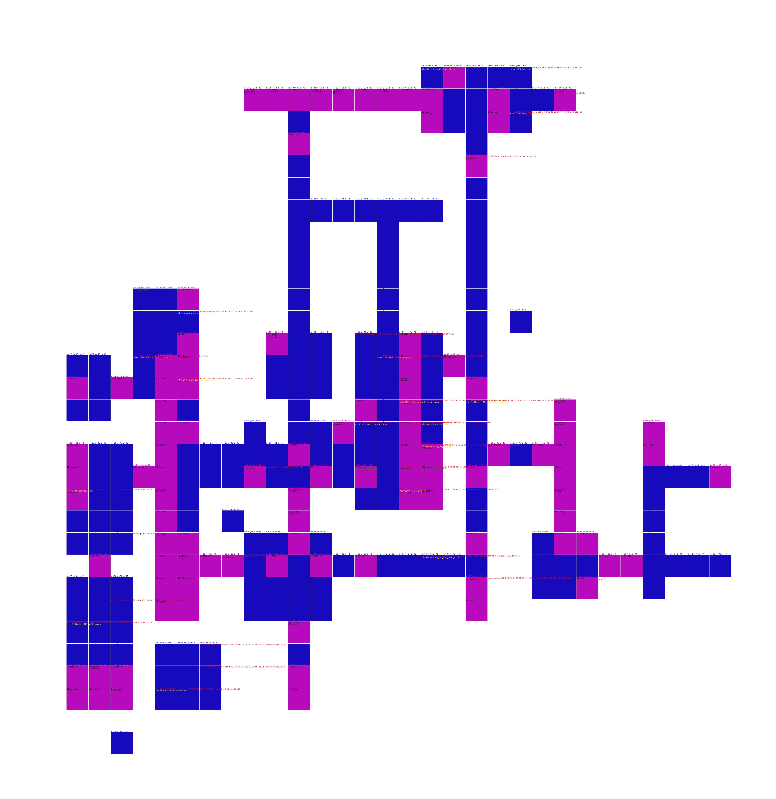
earth_world_quaking_cavern
Item Memory used 8
Creatures score 396
3 exit-door Entrance -> fire_world_burning_cavern pos( -5 ,0 ,-5),unknown( 1 ,1),destMapIndex( 3),rot( 3),fineY( 0)
0 item_77_plate_mail_of_rage
1 item_11c_healing_potion
2 item_123_fire_world_stone
3 item_9f_caustic_leg_guard
4 item_11d_magic_potion
5 item_d0_holy_ring_of_resist
6 item_11d_magic_potion
7 item_11c_healing_potion
8 item_120_divine_symbol
9 item_136_soul_pod_5_sp
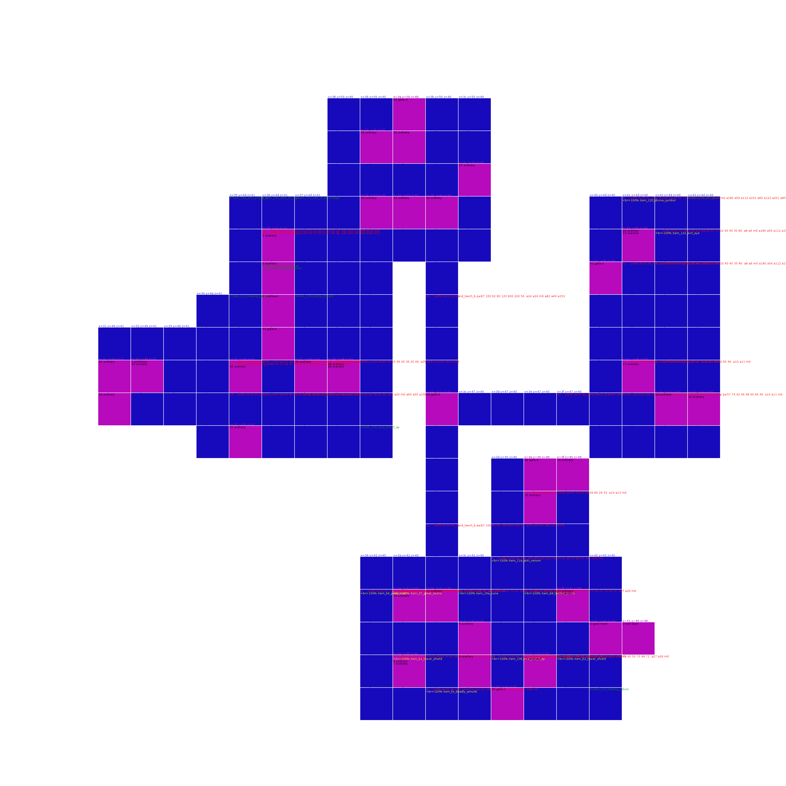
earth_world_false_pit_cavern
Item Memory used 12
Creatures score 185
b 08_guardian_b 100% 0x30 score 390
c 08_guardian_b 100% 0x30 score 390
1 exit-door Bridge -> shadow_tower_part2b pos( 4 ,9 ,4),unknown( 7 ,0),destMapIndex( 0),rot( 0),fineY( -8)
3 exit-door Entrance -> death_world_undead_layer pos( 0 ,6 ,0),unknown( 0 ,0),destMapIndex( 41),rot( 3),fineY( -8)
11 exit-door Exit -> shadow_tower_part2a pos( 0 ,1 ,0),unknown( 10 ,0),destMapIndex( 40),rot( 1),fineY( -8)
16 exit-totem Totem -> illusion_world_dream_domain pos( 17 ,4 ,17),unknown( 13 ,0),destMapIndex( 0),rot( 0),fineY( 2)
19 exit-totem Jump in -> death_world_dark_castle_layer pos( 2 ,-1 ,2),unknown( -7 ,0),destMapIndex( 8),rot( -8),fineY( 0)
0 item_11d_magic_potion
1 item_123_fire_world_stone
2 item_ef_deadly_bracelet
3 item_11c_healing_potion
4 item_a1_buckler
5 item_50_full_helm
6 item_12e_dorados_ashes
7 item_125_dust_of_rage
8 item_11c_healing_potion
9 item_120_divine_symbol
a item_11e_anti_venom
b item_10e_sacred_feather
c item_fc_amulet_of_movement
d item_125_dust_of_rage
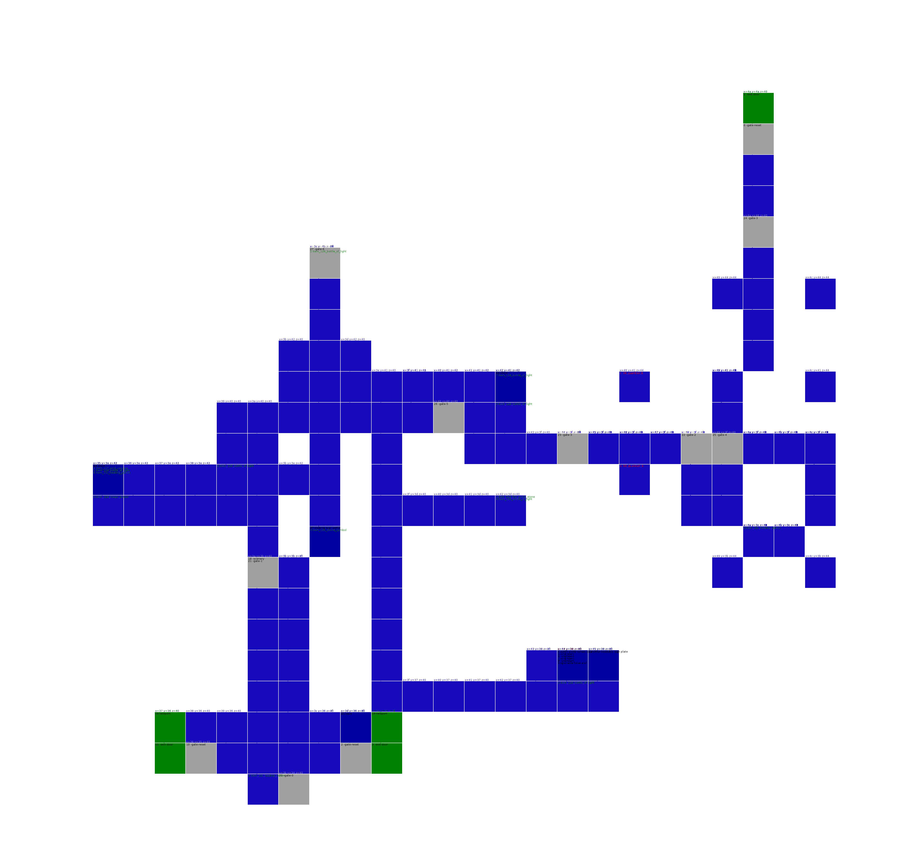
earth_world_hostile_rock_cavern
Item Memory used 5
Creatures score 198
21 04_dread_knight 100% 0x10 score 782
1 exit-door Entrance -> fire_world_phoenix_cave pos( 1 ,0 ,1),unknown( 1 ,1),destMapIndex( 3),rot( 3),fineY( 0)
3 exit-totem Boss room -> death_world_lingering_curse_layer pos( 14,-14 ,14),unknown( -7 ,0),destMapIndex(252),rot( 0),fineY( 3)
0 item_a5_shield_of_resist
1 item_127_acid_vaccine
2 item_10e_sacred_feather
3 item_90_steel_boots
4 item_11c_healing_potion
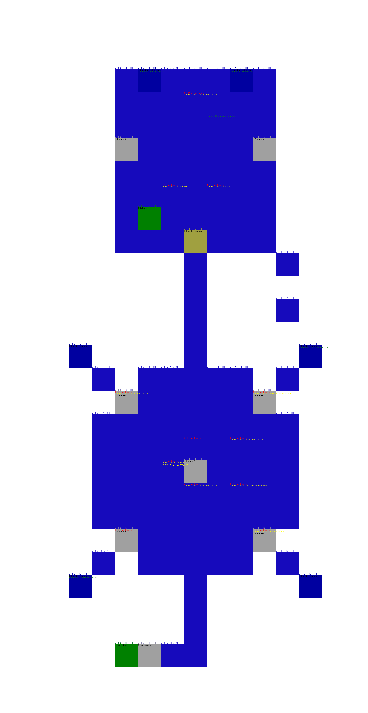
Fire World
fire_world_burning_cavern
Item Memory used 4
Creatures score 549
37 exit-door Entrance -> earth_world_quaking_cavern pos( 0 ,0 ,0),unknown( -7 ,0),destMapIndex( 12),rot( 2),fineY( 0)
93 exit-portal Room -> illusion_world_worship_domain pos( 24 ,12 ,24),unknown( 2 ,0),destMapIndex(240),rot( 0),fineY( 1)
94 exit-portal Platform -> illusion_world_dream_domain pos( 18 ,1 ,18),unknown(-10 ,16),destMapIndex( 16),rot( 8),fineY( 0)
0 item_10c_torch
1 item_11c_healing_potion
2 item_11c_healing_potion
3 item_2_deadly_short_sword
4 item_136_soul_pod_5_sp
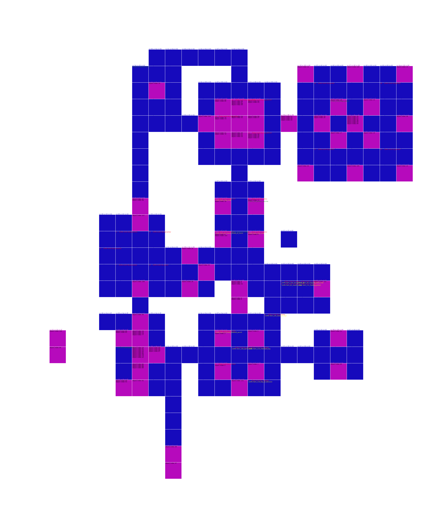
fire_world_molten_cavern
Item Memory used 11
Creatures score 16544
21 02_dead_abraxus 100% 0x10 score 249
100% item_db_caustic_ring
30 00_abraxus 100% 0x10 score 16629
100% item_7e_metal_glove
100% item_bd_gothic_shield_of_honor
31 0c_fat_mole_c 100% 0x5 score 16410
32 08_fat_mole_b 100% 0x5 score 16410
100% item_7d_wooden_glove
19 exit-portal Platform -> illusion_world_worship_domain pos( 20 ,-6 ,20),unknown( -8 ,0),destMapIndex( 8),rot( 0),fineY( 0)
27 exit-portal Abraxus -> fire_world_ashen_cavern pos( 24 ,12 ,24),unknown( 2 ,0),destMapIndex(240),rot( 0),fineY( 1)
0 item_33_crushing_mace
1 item_127_acid_vaccine
2 item_124_poison_vaccine
3 item_126_bottle_of_light
4 item_12e_dorados_ashes
5 item_122_evil_eye
6 item_11c_healing_potion
7 item_10a_cune
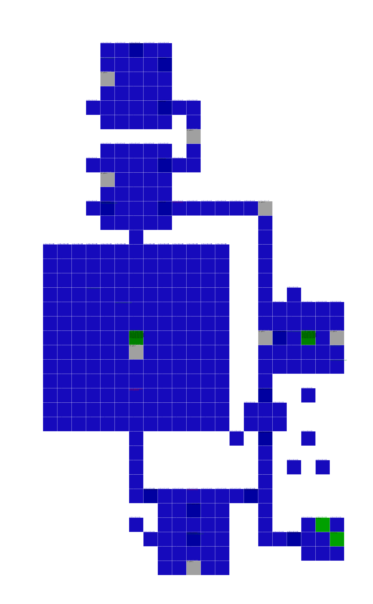
fire_world_phoenix_cave
Item Memory used 12
Creatures score 0
0 exit-door Entrance -> earth_world_hostile_rock_cavern pos( -2 ,0 ,-2),unknown( 0 ,0),destMapIndex( 33),rot( 3),fineY( 0)
1 exit-door Exit -> shadow_tower_part1c pos( 4 ,9 ,4),unknown( 7 ,0),destMapIndex( 0),rot( 0),fineY( -8)
0 item_126_bottle_of_light
1 item_10d_lamp
2 item_12e_dorados_ashes
3 item_12e_dorados_ashes
4 item_11e_anti_venom
5 item_128_spirit_book
6 item_11e_anti_venom
7 item_11c_healing_potion
8 item_124_poison_vaccine
9 item_127_acid_vaccine
a item_11f_anti_paralytic
b item_11c_healing_potion
c item_122_evil_eye
d item_49_crown_of_resist
e item_10a_cune
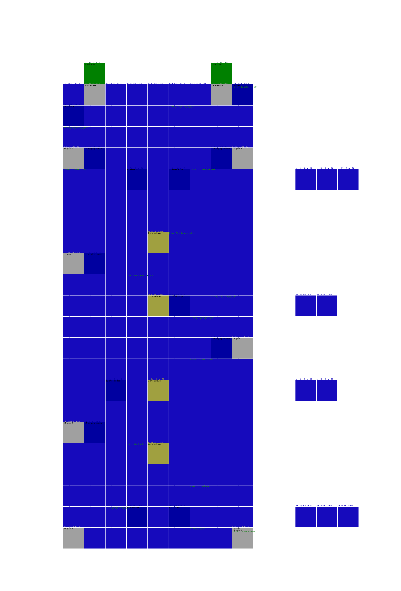
fire_world_ashen_cavern
Item Memory used 6
Creatures score 6463
20 0c_ebony_knight 100% 0x100 score 3075
6 exit-portal Start -> illusion_world_worship_domain pos( 13 ,15 ,13),unknown( -7 ,0),destMapIndex( 0),rot( 0),fineY( 0)
17 exit-portal Cerberus -> fire_world_molten_cavern pos( 24 ,0 ,24),unknown( 2 ,0),destMapIndex(224),rot( 0),fineY( 2)
0 item_11c_healing_potion
1 item_fe_deadly_amulet
2 item_116_key_of_delusion
3 item_12e_dorados_ashes
4 item_138_soul_pod_29_sp
6 item_95_caustic_steel_boots
7 item_11c_healing_potion
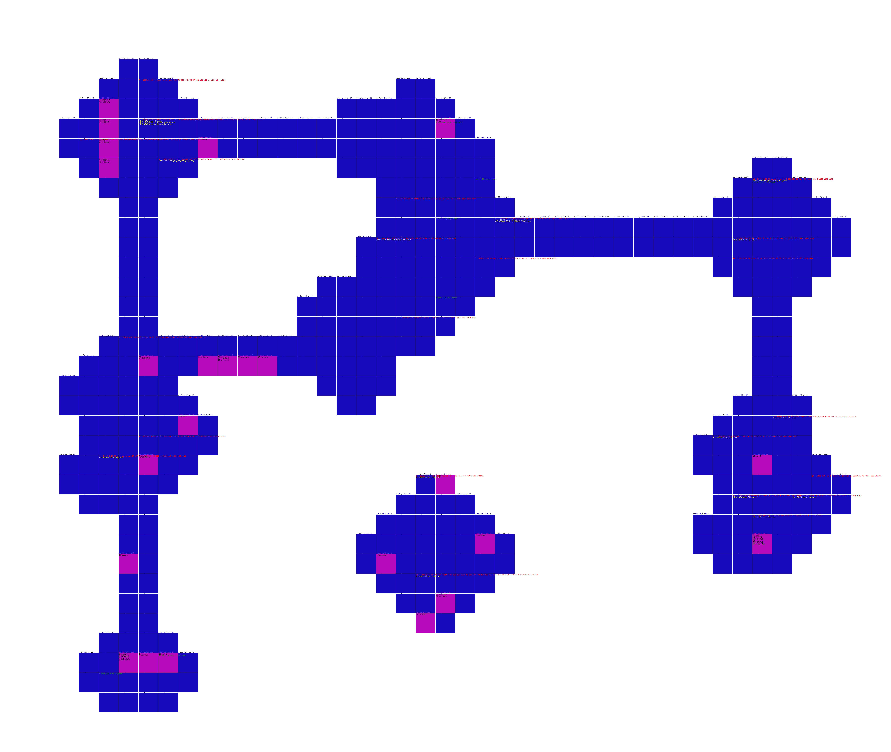
Water World
water_world_impure_pool_area
Item Memory used 6
Creatures score 16349
30 00_fat_mole_f 100% 0x5 score 16432
100% item_cd_sorcerer_ring_of_frost
31 04_blank 100% 0x5 score 191
9 exit-door Entrance -> illusion_world_bewilderment_domain pos( -4 ,5 ,-4),unknown( 0 ,0),destMapIndex( 41),rot( 2),fineY( -8)
11 exit-door Flush down -> human_world_solitary_region pos( -2 ,0 ,-2),unknown( 0 ,0),destMapIndex( 33),rot( 3),fineY( 0)
14 exit-totem Totem -> death_world_dark_castle_layer pos( 25,-13 ,25),unknown( 0 ,0),destMapIndex( 0),rot( 0),fineY( 2)
0 item_126_bottle_of_light
1 item_11d_magic_potion
2 item_c7_priest_ring_of_fire
3 item_10a_cune
4 item_125_dust_of_rage
5 item_80_metal_glove
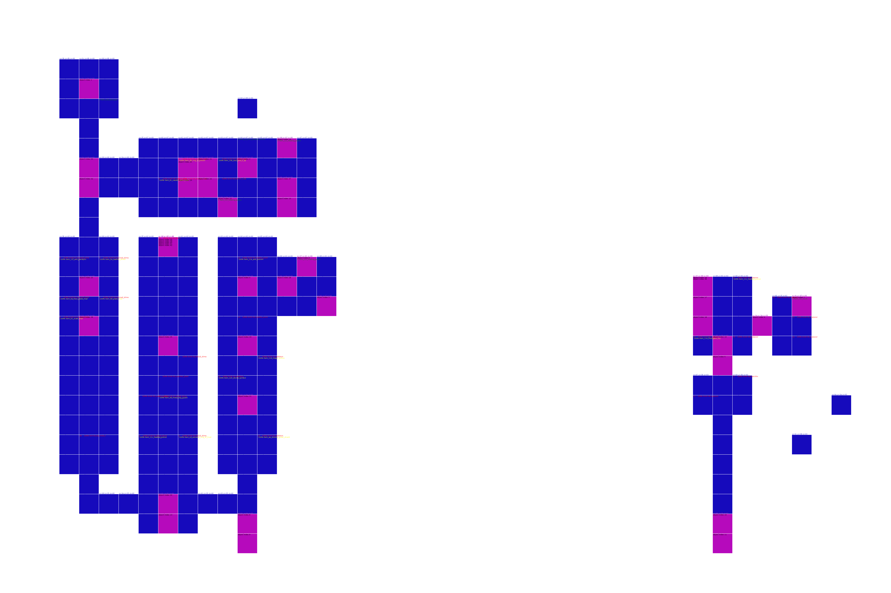
water_world_sunken_river_area
Item Memory used 9
Creatures score 624
1 exit-door Entrance -> earth_world_poisonous_cavern pos( 4 ,1 ,4),unknown( 0 ,0),destMapIndex( 41),rot( 3),fineY( -8)
5 exit-door Pool -> human_world_forgotten_region pos( -9 ,0 ,-9),unknown( 0 ,0),destMapIndex( 32),rot( 1),fineY( 0)
0 item_e8_bracelet_of_balance
1 item_12e_dorados_ashes
2 item_10a_cune
3 item_11d_magic_potion
4 item_123_fire_world_stone
5 item_126_bottle_of_light
6 item_136_soul_pod_5_sp
7 item_11d_magic_potion
1c item_122_evil_eye
1d item_d_shadow_wolf
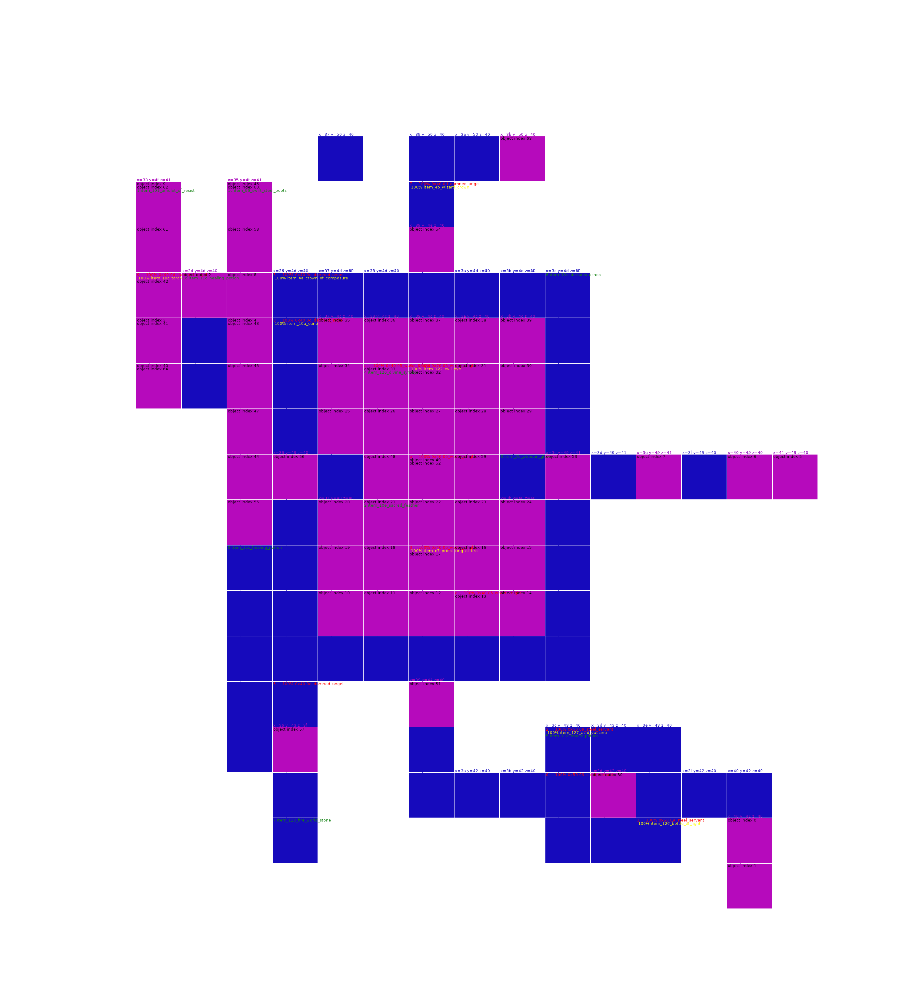
water_world_white_rain_area
Item Memory used 4
Creatures score 281
20 05_magi_magus 100% 0x10 score 1311
100% item_10a_cune
4 exit-door Entrance -> water_world_watery_labyrinth_area pos( 8 ,0 ,8),unknown( 0 ,0),destMapIndex( 32),rot( 3),fineY( 0)
6 exit-totem Totem -> death_world_dark_castle_layer pos( 25,-13 ,25),unknown( 0 ,0),destMapIndex( 0),rot( 0),fineY( 2)
0 item_11c_healing_potion
1 item_136_soul_pod_5_sp
2 item_128_spirit_book
3 item_11c_healing_potion
4 item_10a_cune
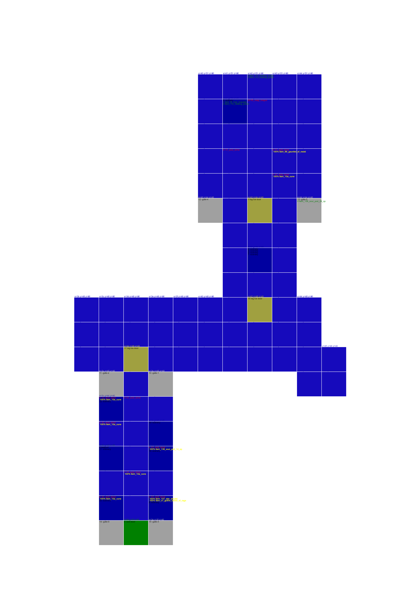
water_world_watery_labyrinth_area
Item Memory used 10
Creatures score 576
8 exit-door Entrance -> water_world_white_rain_area pos( -1 ,-1 ,-1),unknown( 1 ,1),destMapIndex( 32),rot( 0),fineY( 0)
9 exit-door Exit -> shadow_tower_part1c pos( 2 ,7 ,2),unknown( 0 ,0),destMapIndex( 0),rot( 1),fineY( -8)
0 item_11c_healing_potion
1 item_128_spirit_book
2 item_123_fire_world_stone
3 item_126_bottle_of_light
4 item_117_brass_key
5 item_110_fiery_key
6 item_11e_anti_venom
7 item_32_mace
8 item_11e_anti_venom
9 item_11f_anti_paralytic
a item_122_evil_eye
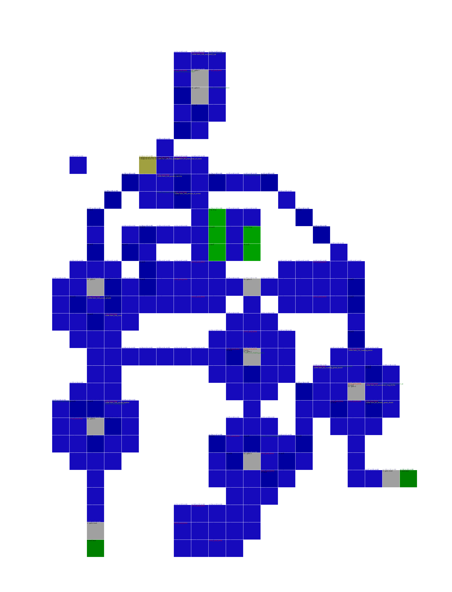
Monster World
monster_world_false_eye_area
Item Memory used 5
Creatures score 354
30 02_lizard_servant 100% 0x10 score 233
100% item_3d_deadly_axe
31 06_lizard_servant 100% 0x10 score 233
9 exit-door Entrance -> shadow_tower_part2b pos( 4 ,5 ,4),unknown( 0 ,0),destMapIndex( 40),rot( 3),fineY( -8)
10 exit-totem Totem -> monster_world_screeching_area pos( 17 ,4 ,17),unknown( 13 ,0),destMapIndex( 0),rot( 0),fineY( 2)
0 item_11c_healing_potion
1 item_126_bottle_of_light
2 item_124_poison_vaccine
3 item_127_acid_vaccine
4 item_126_bottle_of_light
5 item_11c_healing_potion
6 item_11c_healing_potion
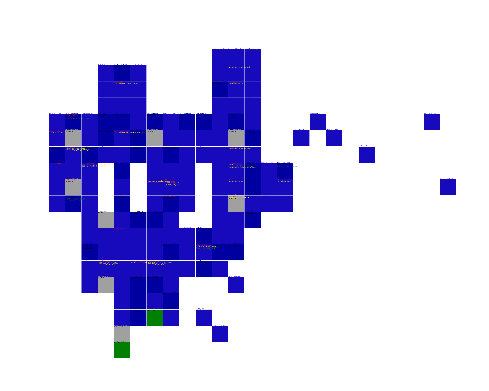
monster_world_screeching_area
Item Memory used 5
Creatures score 2061
21 0e_necron 100% 0x10 score 1592
100% item_a2_buckler
30 01_auriel_c 100% 0x10 score 2530
100% item_11d_magic_potion
0 exit-door Entrance -> shadow_tower_part3b pos( -4 ,5 ,-4),unknown( 0 ,0),destMapIndex( 41),rot( 2),fineY( -8)
3 exit-totem Totem -> human_world_forgotten_region pos( 6 ,1 ,6),unknown( 4 ,0),destMapIndex( 0),rot( 0),fineY( 1)
6 exit-totem Necron -> monster_world_false_eye_area pos( 2 ,-1 ,2),unknown( -7 ,0),destMapIndex( 8),rot( -8),fineY( 0)
0 item_10d_lamp
1 item_11e_anti_venom
2 item_11e_anti_venom
1c item_8e_leather_boots
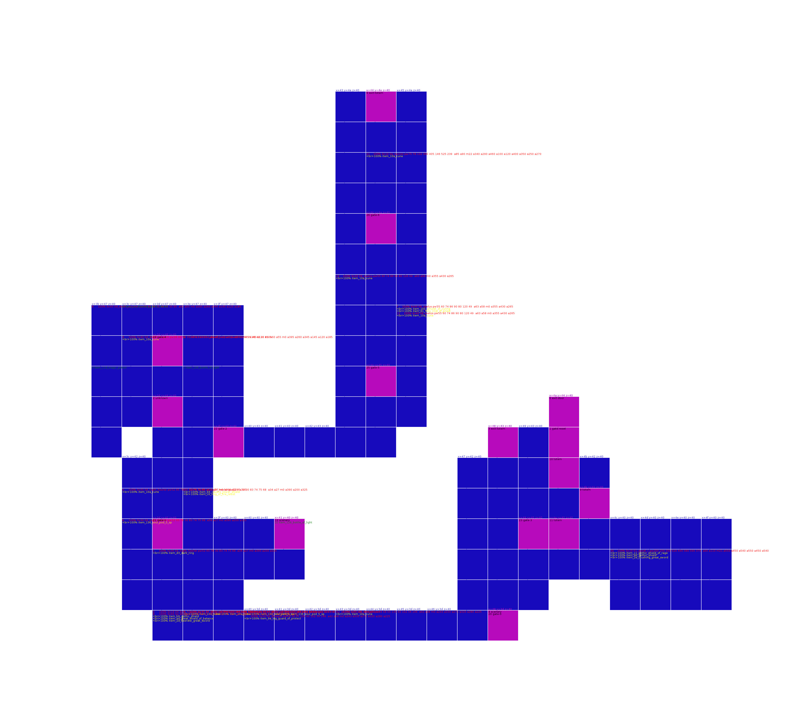
Illusion World
illusion_world_gloomy_domain
Item Memory used 4
Creatures score 834
30 0e_blank 100% 0x20 score 103
1 exit-door Entrance -> shadow_tower_part1b pos( -4 ,6 ,-4),unknown( 0 ,0),destMapIndex( 0),rot( 1),fineY( -8)
3 exit-door Ladder down -> human_world_solitary_region pos( -2 ,2 ,-2),unknown( -8 ,0),destMapIndex( 9),rot( 1),fineY( 0)
10 exit-totem Totem -> death_world_gate_of_the_dead pos( 23 ,20 ,23),unknown( 0 ,0),destMapIndex(248),rot( 0),fineY( 0)
2 item_11c_healing_potion
3 item_124_poison_vaccine
5 item_128_spirit_book
6 item_120_divine_symbol
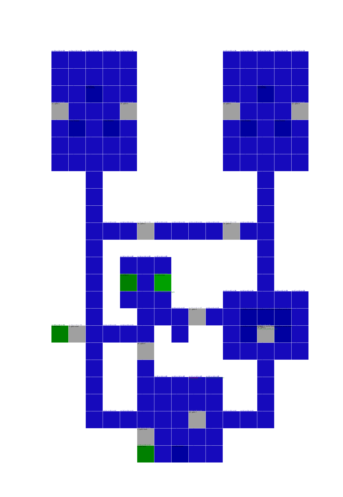
illusion_world_bewilderment_domain
Item Memory used 11
Creatures score 415
18 exit-door Exit -> water_world_impure_pool_area pos(-16 ,5,-16),unknown(-10 ,0),destMapIndex( 28),rot( 1),fineY( 0)
20 exit-door Entrance -> earth_world_rotting_cavern pos( -4 ,2 ,-4),unknown( 0 ,0),destMapIndex( 41),rot( 2),fineY( -8)
0 item_120_divine_symbol
1 item_126_bottle_of_light
2 item_130_blue_crystal
3 item_11e_anti_venom
4 item_11c_healing_potion
5 item_10d_lamp
6 item_10c_torch
7 item_122_evil_eye
8 item_10a_cune
9 item_11c_healing_potion
a item_11e_anti_venom
b item_10d_lamp
c item_10c_torch
d item_116_key_of_delusion
e item_116_key_of_delusion
f item_116_key_of_delusion
10 item_116_key_of_delusion
11 item_11f_anti_paralytic
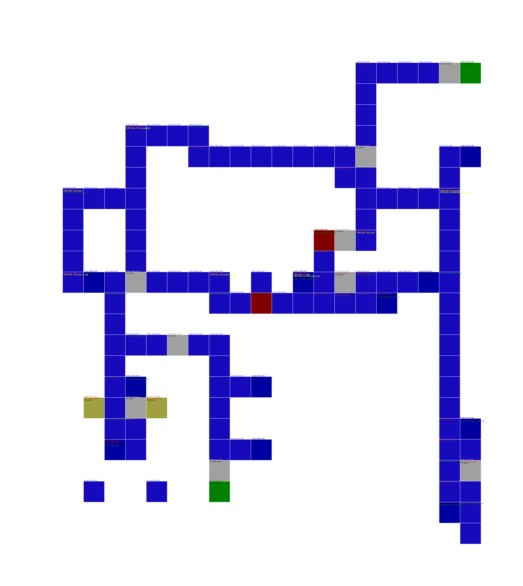
illusion_world_worship_domain
Item Memory used 5
Creatures score 706
21 04_wildowess 100% 0x5 score 1921
100% item_8d_leather_boots
22 01_gorthaur 100% 0x10 score 1026
23 08_fester 100% 0x5 score 1468
100% item_120_divine_symbol
30 02_fat_mole_d 100% 0x80 score 16436
100% item_1_short_sword
1 exit-door Entrance -> shadow_tower_part3b pos( -4 ,5 ,-4),unknown( 0 ,0),destMapIndex( 41),rot( 2),fineY( -8)
6 exit-portal Connection -> fire_world_molten_cavern pos( 24 ,12 ,24),unknown( 2 ,0),destMapIndex(240),rot( 0),fineY( 1)
8 exit-portal To Boss -> fire_world_burning_cavern pos( 20 ,-6 ,20),unknown( -8 ,0),destMapIndex( 8),rot( 0),fineY( 0)
10 exit-portal Exit -> fire_world_ashen_cavern pos( 18 ,1 ,18),unknown(-10 ,16),destMapIndex( 16),rot( 8),fineY( 0)
0 item_11c_healing_potion
1 item_11d_magic_potion
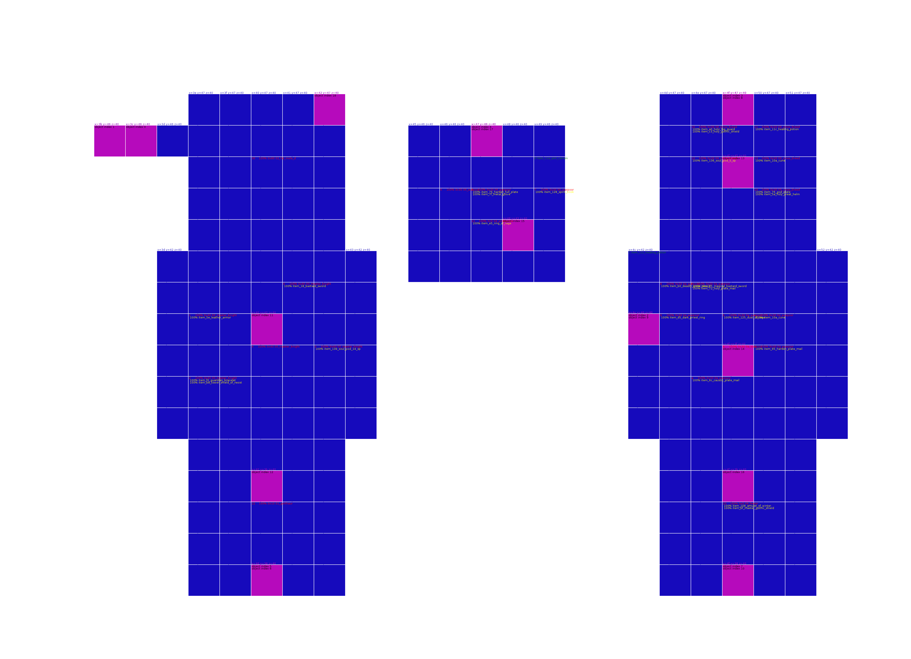
illusion_world_dream_domain
Item Memory used 4
Creatures score 1560
20 01_disguise 100% 0x10 score 1096
100% item_136_soul_pod_5_sp
3 exit-portal Entrance -> fire_world_burning_cavern pos( 20 ,-6 ,20),unknown( -8 ,0),destMapIndex( 8),rot( 0),fineY( 0)
4 exit-totem Totem -> earth_world_false_pit_cavern pos( 17 ,8 ,17),unknown( 3 ,0),destMapIndex( 0),rot( 8),fineY( 3)
0 item_c5_summoner_ring_of_fire
1 item_11c_healing_potion
2 item_10e_sacred_feather
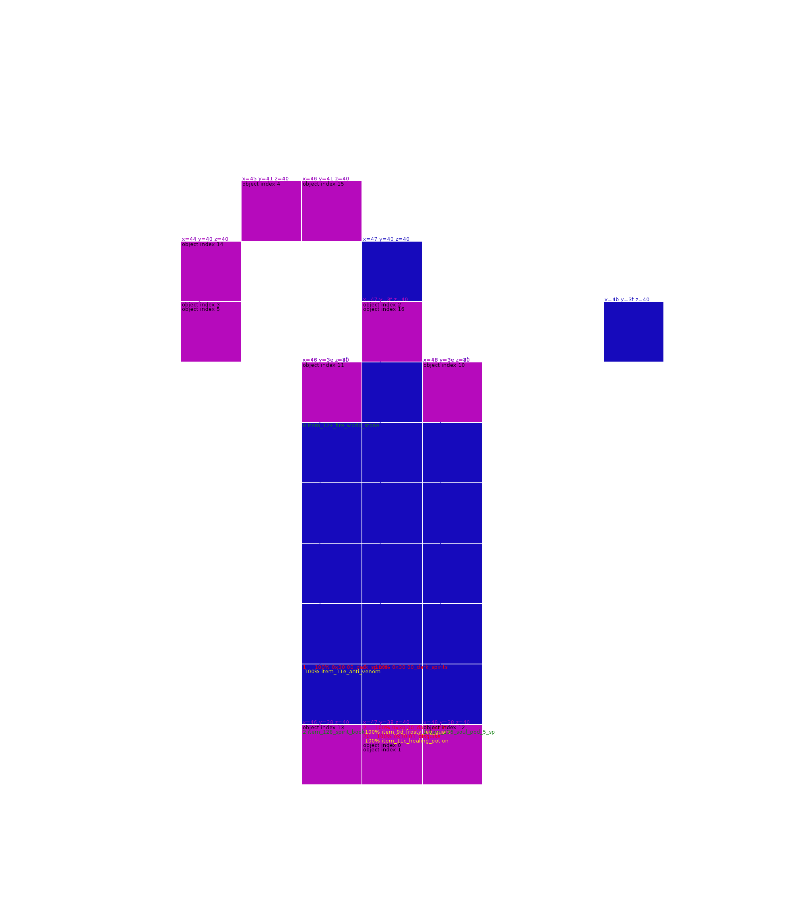
Death World
death_world_dark_castle_layer
Item Memory used 5
Creatures score 1051
20 08_armored_guardian 100% 0x30 score 1259
0 exit-door Prison -> death_world_undead_layer pos( 1 ,1 ,1),unknown( 0 ,0),destMapIndex( 26),rot( 1),fineY( 0)
2 exit-door Entrance -> human_world_hidden_region pos( -3 ,0 ,-3),unknown( 0 ,0),destMapIndex( 5),rot( 0),fineY( 0)
4 exit-totem Lower totem 1 -> earth_world_false_pit_cavern pos( 14,-14 ,14),unknown( -7 ,0),destMapIndex(252),rot( 0),fineY( 3)
7 exit-totem Lower totem 2 -> water_world_white_rain_area pos( 23 ,20 ,23),unknown( 0 ,0),destMapIndex(248),rot( 0),fineY( 0)
10 exit-totem Upper totem -> water_world_impure_pool_area pos( 6 ,1 ,6),unknown( 4 ,0),destMapIndex( 0),rot( 0),fineY( 1)
0 item_b4_harden_tower_shield
1 item_120_divine_symbol
2 item_123_fire_world_stone
3 item_101_amulet_of_resist
4 item_11c_healing_potion
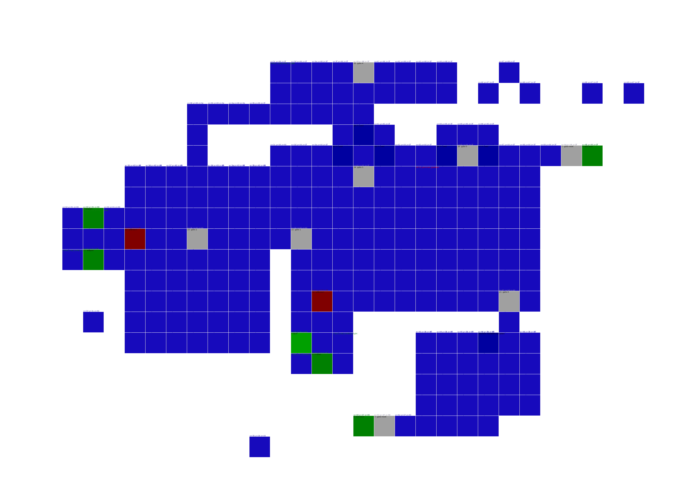
death_world_gate_of_the_dead
Item Memory used 4
Creatures score 2486
20 0c_hollow_mage 100% 0x5 score 2953
100% item_10a_cune
1 exit-door Entrance -> shadow_tower_part3c pos( 0 ,6 ,0),unknown( 0 ,0),destMapIndex( 41),rot( 3),fineY( -8)
4 exit-totem Totem -> illusion_world_gloomy_domain pos( 25,-13 ,25),unknown( 0 ,0),destMapIndex( 0),rot( 0),fineY( 2)
0 item_10c_torch
1 item_67_plate_mail_of_curing
2 item_fb_magical_amulet
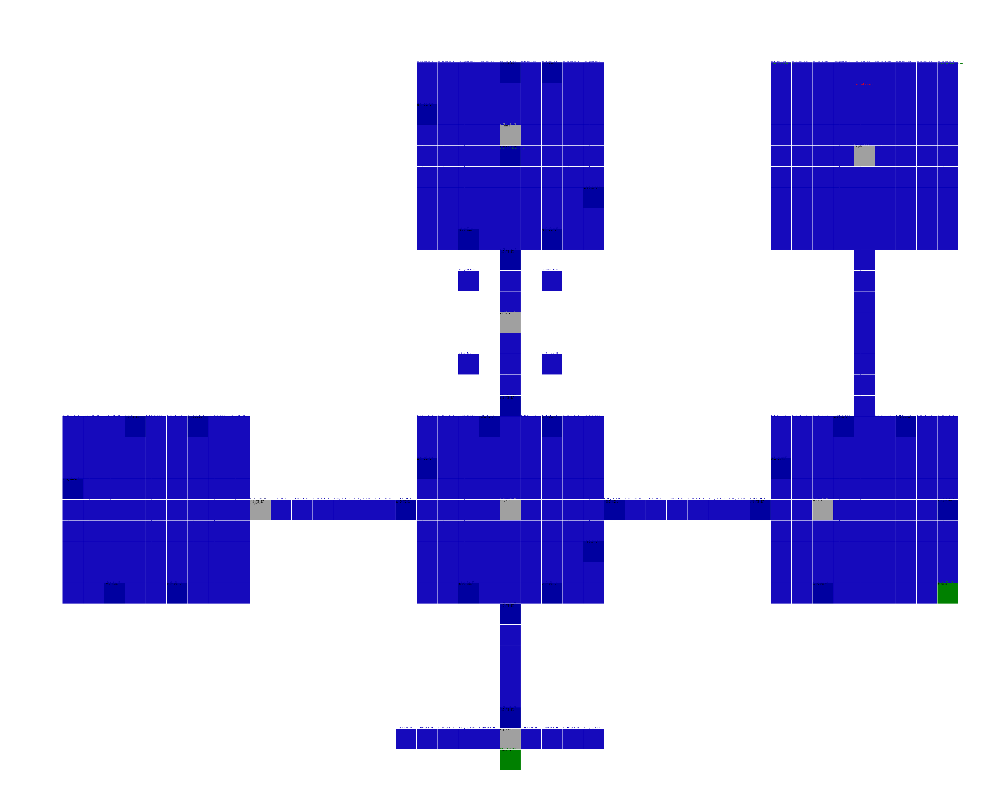
death_world_lingering_curse_layer
Item Memory used 4
Creatures score 1214
5 0d_bugler 100% 0x40 score 1489
6 0d_bugler 100% 0x40 score 1489
7 0d_bugler 100% 0x40 score 1489
30 01_stack_eyes 100% 0x20 score 1215
31 04_blank 100% 0x20 score 192
1 exit-door Door -> earth_world_poisonous_cavern pos( 9 ,1 ,9),unknown( 0 ,0),destMapIndex( 27),rot( 2),fineY( 0)
2 exit-totem Box room -> earth_world_hostile_rock_cavern pos( 33 ,-1 ,33),unknown( 11 ,0),destMapIndex( 0),rot( 0),fineY( 3)
0 item_10e_sacred_feather
1 item_10c_torch
2 item_5d_leather_armor
3 item_123_fire_world_stone
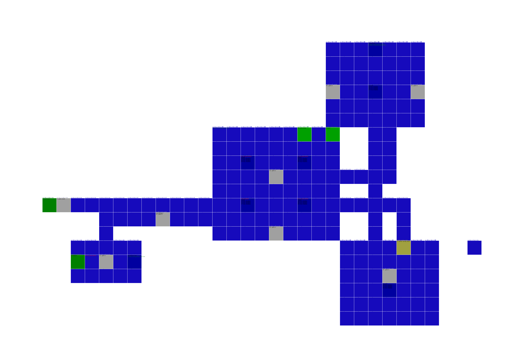
death_world_undead_layer
Item Memory used 10
Creatures score 5774
21 04_king_edward 100% 0x20 score 2327
30 01_unknown_b 100% 0x20 score 2533
31 09_pulsating_heart 100% 0x10 score 1785
32 0d_fat_mole_e 100% 0x10 score 16450
12 exit-door King's room -> earth_world_false_pit_cavern pos( 4 ,5 ,4),unknown( 0 ,0),destMapIndex( 40),rot( 3),fineY( -8)
15 exit-door Entrance -> death_world_dark_castle_layer pos( 10 ,-1 ,10),unknown( 0 ,0),destMapIndex( 25),rot( 3),fineY( 0)
0 item_11c_healing_potion
1 item_11f_anti_paralytic
2 item_12e_dorados_ashes
3 item_12e_dorados_ashes
4 item_10a_cune
5 item_11c_healing_potion
6 item_11c_healing_potion
7 item_124_poison_vaccine
8 item_136_soul_pod_5_sp
9 item_10e_sacred_feather
a item_bc_gothic_shield_of_resist
1c item_10c_torch
1d item_120_divine_symbol
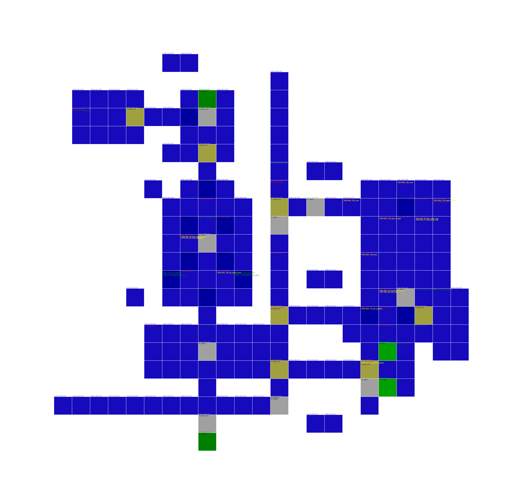
Shadow Tower
shadow_tower_part1
Item Memory used 0
Creatures score 0
0 exit-door Tower Top -> shadow_tower_part3a pos( 4 ,1 ,4),unknown( 0 ,0),destMapIndex( 41),rot( 3),fineY( -8)
4 exit-door Edge -> illusion_world_gloomy_domain pos( 0 ,9 ,0),unknown( 9 ,0),destMapIndex( 0),rot( 1),fineY( -8)
5 exit-door Top -> water_world_watery_labyrinth_area pos( -9 ,0 ,-9),unknown( 0 ,0),destMapIndex( 32),rot( 1),fineY( 0)
8 exit-door Middle -> human_world_cursed_region pos( 0 ,0 ,0),unknown( 0 ,0),destMapIndex( 1),rot( 2),fineY(-17)
9 exit-door Edge -> fire_world_phoenix_cave pos( -5 ,0 ,-5),unknown( 1 ,1),destMapIndex( 3),rot( 3),fineY( 0)
11 exit-door Middle -> shadow_tower_part3a pos( -4 ,2 ,-4),unknown( 0 ,0),destMapIndex( 41),rot( 2),fineY( -8)

shadow_tower_part2
Item Memory used 0
Creatures score 0
0 exit-door Top left -> earth_world_false_pit_cavern pos( -8 ,0 ,-8),unknown( 1 ,1),destMapIndex( 15),rot( 3),fineY( 0)
4 exit-door Top right -> human_world_hidden_region pos( 0 ,0 ,0),unknown( 1 ,1),destMapIndex( 5),rot( 0),fineY( 0)
5 exit-door Edge -> earth_world_false_pit_cavern pos( 1 ,0 ,1),unknown( 1 ,1),destMapIndex( 3),rot( 3),fineY( 0)
7 exit-door Middle -> earth_world_poisonous_cavern pos( -5 ,0 ,-5),unknown( 1 ,1),destMapIndex( 3),rot( 3),fineY( 0)
9 exit-door Upper -> monster_world_false_eye_area pos(-16 ,5,-16),unknown(-10 ,0),destMapIndex( 28),rot( 1),fineY( 0)

shadow_tower_part3
Item Memory used 0
Creatures score 0
0 exit-door Top right -> shadow_tower_part1a pos( 5 ,3 ,5),unknown( 0 ,0),destMapIndex( 0),rot( 0),fineY( -8)
3 exit-door Top left -> human_world_solitary_region pos( 9 ,2 ,9),unknown( 0 ,0),destMapIndex( 4),rot( 2),fineY( 0)
5 exit-door Bottom middle -> earth_world_stone_cavern pos(-16 ,5,-16),unknown(-10 ,0),destMapIndex( 28),rot( 1),fineY( 0)
7 exit-door Top edge -> illusion_world_worship_domain pos( -2 ,2 ,-2),unknown( -8 ,0),destMapIndex( 9),rot( 1),fineY( 0)
9 exit-door Bottom -> shadow_tower_part1c pos( 0 ,9 ,0),unknown( 9 ,0),destMapIndex( 0),rot( 1),fineY( -8)
10 exit-door Fence -> death_world_gate_of_the_dead pos( 0 ,0 ,0),unknown( 0 ,0),destMapIndex( 23),rot( 0),fineY( 0)
13 exit-door Bottom end -> monster_world_screeching_area pos( -2 ,2 ,-2),unknown( -8 ,0),destMapIndex( 9),rot( 1),fineY( 0)
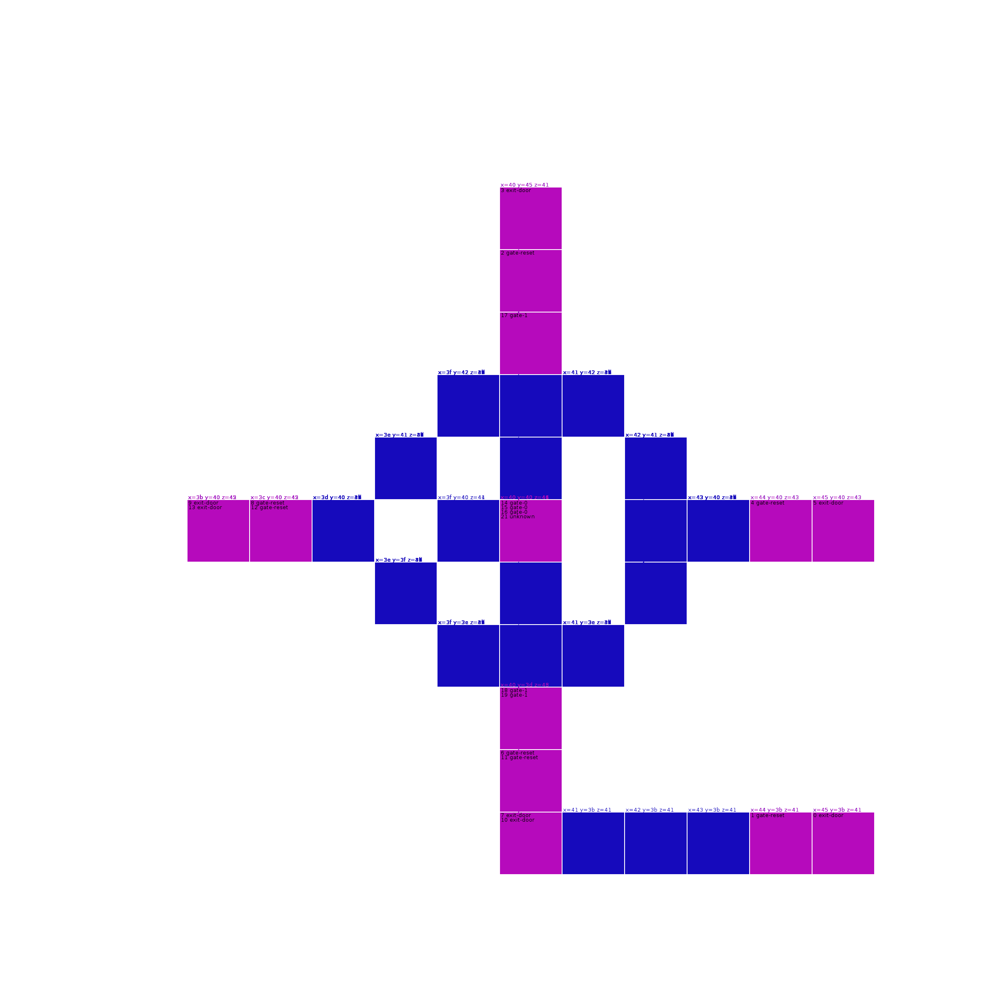
Void
void
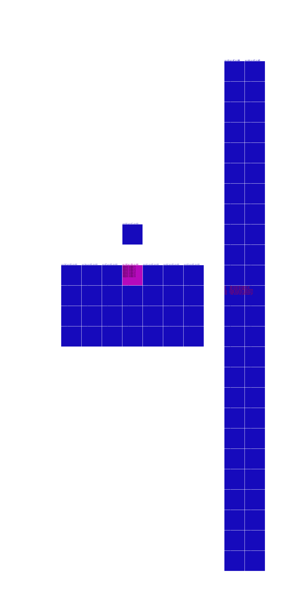